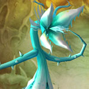

You can find the Maraudon Foulspore Cavern dungeon within Desolace, Kalimdor.
The coordinates are (29.9,63.0)
Click for Dungeon Entrance:


Go inside and follow the pathway round, go down some stairs.

For this dungeon entrance take the right (orange crystals) & stay on the main path.
Route:
Map 1

Bosses:
1. Noxxion2. Razorlash
Quick Boss Tactics:
/i Inflicts a poison on all players when casts Toxic Volley. Watch out for Uppercut, knocks away current target. Boss will split into 5 spawns, kill all spawns to re-target him.
/i Inflicts a poison on all players when casts Toxic Volley. Watch out for Uppercut, knocks away current target. Boss will split into 5 spawns, kill all spawns to re-target him.

Quick Boss Tactics:/i Cleave will inflict physical damage to nearest targets. The bosses current target will be taking Puncture & Thrash attacks.